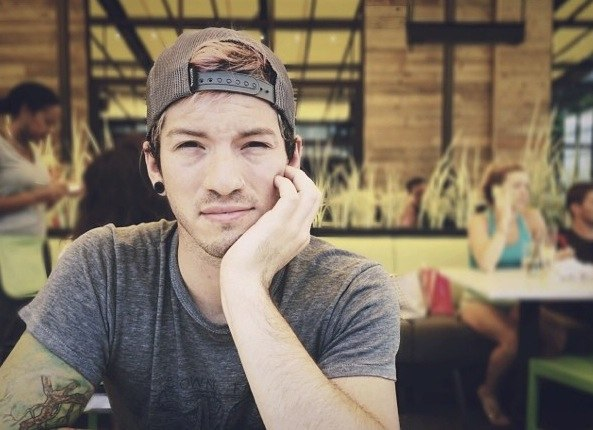

Биография Джоша Дана
Огайо. Барабанщик в группе Twenty One Pilots, и бывший барабанщик группы House of Heroes
Ранняя жизнь
Джош родился в городе Колумбус, штат Огайо. У него есть две сестры Эшли и Абигейль, и брат Джордан. Он самостоятельно учился играть на барабанах, когда был молод. По словам Джоша ему не разрешали слушать музыку в детстве, но раз в неделю он ходил в музыкальный магазин и спрашивал рекомендации у людей, которые были там. Джош работал в Guitar Center три года, так же там работал барабанщик группы Twenty One Pilots Крис Салих.
Карьера
House of Heroes
Джош присоединился к группе House of Heroes в марте 2010, после того как бывший барабанщик группы, Колин Ригсби, взял перерыв что бы провести больше времени со своей семьей. Дан стал частью группы после того как он зарекомендовал себя Ригсби. Джош был участником группы до октября, после чего Ригсби вернулся в группу.
Twenty One Pilots
В 2011 году, Крис Салих пригласил Джоша на выступление Twenty One Pilots, он был впечатлен выступлением трио. После шоу Джош встретил солиста группы Тайлера Джозефа, и спустя пару дней они начали проводить время вместе и строить дружеские отношения.Позднее в этом году Ник Томас и Крис Салих покинули группу. Джош уволился из Guitar Center чтобы играть на одном шоу с Тайлером. Они успели исполнить только одну песню, до того как пришла полиция и отменила концерт. Спустя день Джош становится участником группы Twenty One Pilots. Дуэт тогда выпустил второй альбом под названием Regional at Best, 8 июля 2011, и подписал контракт с Atlantic Records, дочерним лейблом Fueled by Ramen в апреле 2012 года.Twenty One Pilots выпустили третий альбом, Vessel, 8го января 2013 года.
Личная жизнь
Как известно Джош Христианин. Он состоял в отношениях с актрисой, певицей и продюсером Дебби Райан с мая 2013 по сентябрь 2014.
(c) 2016 The Toxic Void. Designed by Aliste